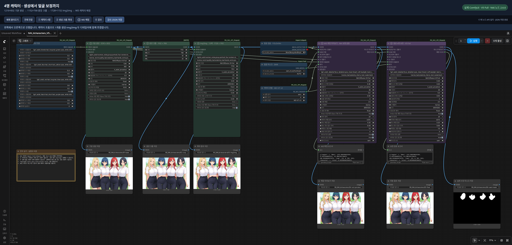
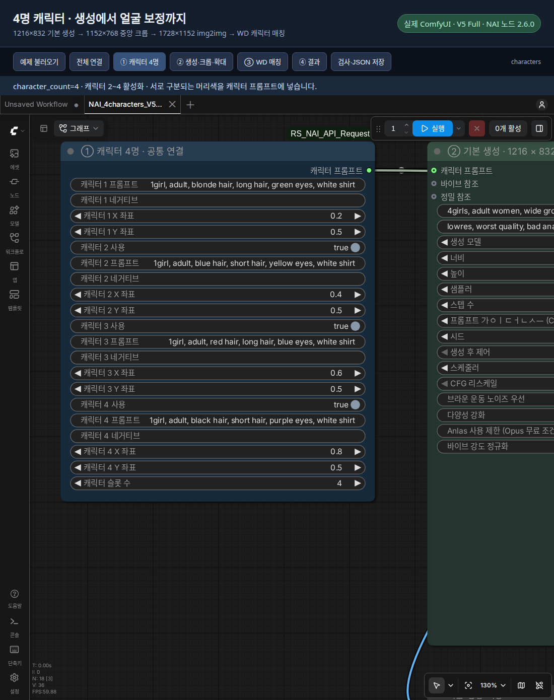
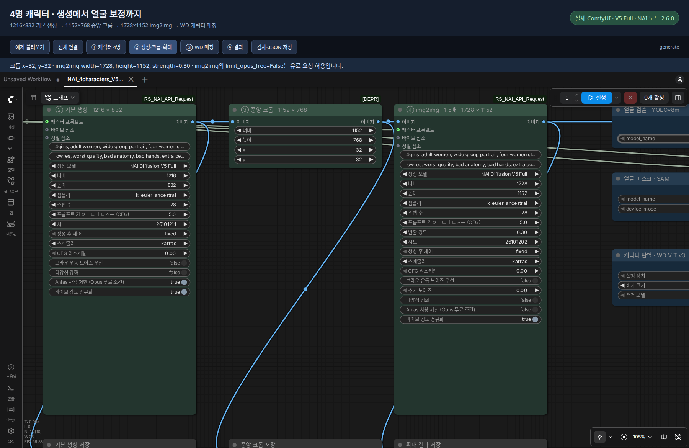
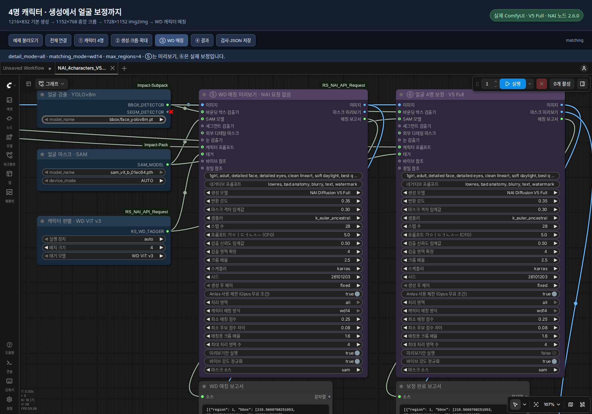
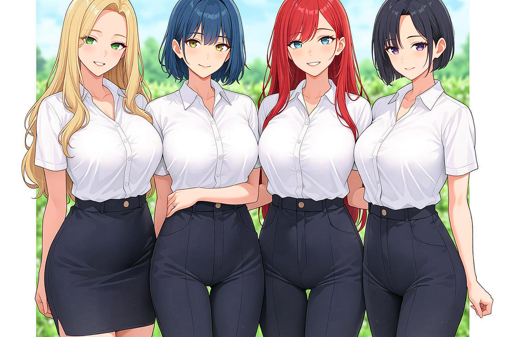
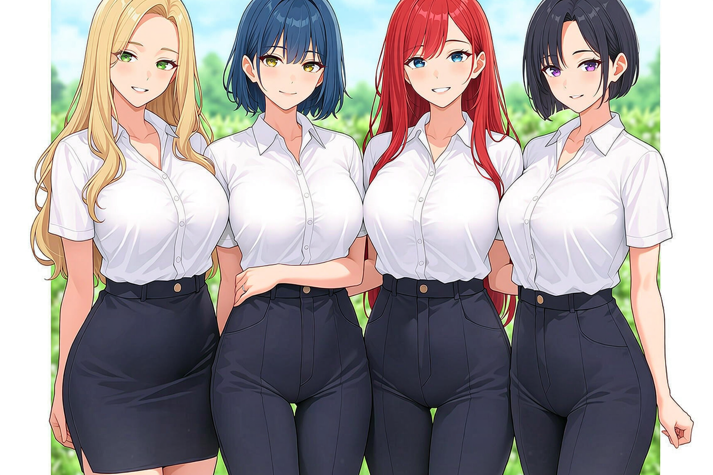
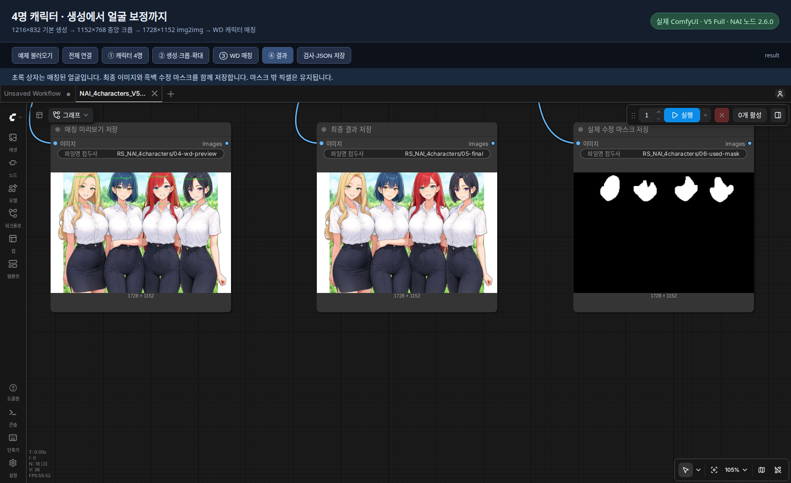

캐릭터 네 명을 한 장에 생성하고, 원하는 비율로 자른 뒤 1.5배로 확대하고, 각 얼굴을 원래 캐릭터 프롬프트로 보정하는 가이드입니다. 첨부 워크플로는 연결과 설정이 끝난 상태라서 처음부터 노드를 만들 필요가 없습니다.
실제 실행 기준은 NAI 노드 2.6.0 · V5 Full · WD ViT v3입니다. 캡처에 있는 노드 이름은 알아보기 쉽도록 바꾼 제목입니다. 직접 노드를 추가할 때는 아래의 원래 이름으로 검색하면 됩니다.
기본 생성 1216×832 → 중앙 크롭 1152×768 → img2img 1728×1152 → 얼굴 4명 보정
워크플로 다운로드
| 먼저 받을 파일 | 용도 |
|---|---|
| 매칭 확인용 PNG · JSON | 기본 생성·확대 후 얼굴별 캐릭터 매칭 확인 |
| 전체 실행용 PNG · JSON | 실제 얼굴 보정·저장까지 실행 |


PNG에는 ComfyUI workflow 메타데이터가 들어 있습니다. 링크에서 원본 파일을 저장한 뒤 ComfyUI에 끌어다 놓으세요. GitHub 파일 화면이 열리면 Download raw file로 받습니다. 화면을 캡처하거나 이미지 서비스의 축소본을 받으면 워크플로가 빠질 수 있습니다. JSON도 같은 방법으로 원본을 저장하면 됩니다.
아카라이브 게시글에서도 캡처와 설명을 볼 수 있습니다. GitHub에서는 이 문서를 읽으면 됩니다. 이미지 확대·보정 전후 비교가 있는 HTML 가이드는 저장소의 Code → Download ZIP으로 전체를 받은 뒤 이 폴더의 index.html을 열어 사용하세요. GitHub의 HTML 파일 화면에서는 가이드가 실행되지 않습니다.
00 먼저 실행 순서부터
- 아래 준비 항목을 설치하고
NAI_4characters_V5_WD_preview.json을 ComfyUI에 끌어다 놓습니다. - 처음에는 예제 프롬프트와 시드를 그대로 두고 실행합니다. 처음 받는 WD 모델은 다운로드가 끝날 때까지 기다립니다.
- ⑤ WD 매칭 미리보기와 보고서에서 얼굴 네 개가 올바른 캐릭터 번호에 연결됐는지 확인합니다.
- 맞으면
NAI_4characters_V5_WD.json을 불러와 실행합니다. 이 파일은 얼굴 보정까지 진행합니다. - 결과를 확인한 뒤, 캐릭터 프롬프트와 장면을 자기 취향으로 바꿔 봅니다.
이 예제에는 유료 img2img 단계가 있습니다. 매칭 확인용 파일도 기본 생성과 img2img를 거칩니다. 2026-10-12 시험에서는 전체 18 Anlas가 차감됐지만, 이것이 고정 가격은 아닙니다. 처음부터 연속 실행을 여러 번 넣지 말고 한 번씩 결과를 확인하세요.
전체 파일의 미리보기와 실제 보정은 함께 실행됩니다. 미리보기 화면을 보고 자동으로 멈춰 주는 구조가 아니므로, 첫 확인에는 위의 매칭 확인용 파일을 사용하세요.
01 준비하고 불러오기
- ComfyUI와
ComfyUI_RS_NAI_API_Request2.6.0 이상을 준비합니다. - Manager에서
ComfyUI-Impact-Pack,ComfyUI-Impact-Subpack을 설치합니다. - 얼굴 검출 모델
face_yolov8m.pt를ComfyUI/models/ultralytics/bbox/에, SAM 모델sam_vit_b_01ec64.pth를ComfyUI/models/sams/에 준비합니다. 모델 관리 화면에서 파일명을 검색해 설치할 수 있습니다. - NAI 노드 폴더의
.env에 본인의NAI_ACCESS_TOKEN을 설정하고 ComfyUI를 재시작합니다. 공유 파일에는 토큰이 없습니다. - WD 모델은
WD ViT v3로 설정되어 있습니다. 처음 실행할 때 필요한 파일을 다운로드하며 로더 노드에 진행도가 표시됩니다.
노드 설치와 토큰 설정은 NAI 노드 README를 참고하세요. 태거의 추가 Python 패키지가 빠져 있다면 노드에 표시되는 설치 명령을 ComfyUI가 사용하는 Python 환경에서 실행하고 재시작합니다.
| 파일 | 용도 |
|---|---|
NAI_4characters_V5_WD_preview.json |
기본 생성·확대 후 얼굴 매칭까지만 확인 |
NAI_4characters_V5_WD.json |
얼굴 보정과 저장까지 모두 실행 |
NAI_4characters_V5_WD.png |
전체 JSON과 같은 워크플로가 들어 있는 PNG |
NAI_4characters_V5_WD_preview.png |
매칭 확인용 JSON과 같은 워크플로가 들어 있는 PNG |
처음에는 매칭 확인용 PNG 또는 JSON을 ComfyUI 화면에 끌어다 놓으세요. 아카라이브에 다시 공유할 때는 이미지 업로드의 Exif 데이터 유지를 켜고 원본 PNG를 올리세요. 받는 사람도 이미지를 눌러 원본 PNG를 저장해야 합니다. 워크플로는 PNG의 workflow 텍스트 메타데이터에 들어 있으며, 게시판의 Exif 유지 옵션으로 이 정보까지 보존합니다.
| 캡처에서 보이는 제목 | 직접 추가할 때 찾을 노드 |
|---|---|
| ① 캐릭터 프롬프트 | NAI Character Prompt Select |
| ② 기본 생성 | NAI Image Generator |
| ③ 중앙 크롭 | ImageCrop |
| ④ 1.5배 img2img | NAI Img2Img |
| 얼굴 검출 | UltralyticsDetectorProvider |
| 얼굴 마스크 | SAMLoader |
| 캐릭터 판별 | NAI WD Tagger Loader (PyTorch) / 한국어: NAI 태거 로더 |
| ⑤ WD 매칭 미리보기 / ⑥ 얼굴 보정 | NAI Face Detailer |
이 예제는 얼굴 검출기 + SAM ViT-B를 사용합니다. SAM3나 SEGM 모델을 추가로 받을 필요는 없습니다.

02 캐릭터 4명 입력
캐릭터 프롬프트 노드 한 개를 기본 생성, img2img, 두 디테일러에 함께 연결했습니다. character_count=4, 캐릭터 2~4 사용=True입니다.
| 캐릭터 | 구분할 특징 | X / Y |
|---|---|---|
| 1 | 금발, 긴 머리, 초록 눈 | 0.2 / 0.5 |
| 2 | 파란 머리, 짧은 머리, 노란 눈 | 0.4 / 0.5 |
| 3 | 빨간 머리, 긴 머리, 파란 눈 | 0.6 / 0.5 |
| 4 | 검정 머리, 짧은 머리, 보라 눈 | 0.8 / 0.5 |
예제의 인물은 모두 성인입니다. 좌표는 기본 생성의 배치 힌트이고, WD 매칭은 잘라낸 얼굴의 태그 점수와 원래 캐릭터 프롬프트를 비교합니다. 서로 다른 머리색처럼 구분되는 특징을 적어 주세요. 태거가 추론한 태그를 생성 프롬프트에 덧붙이지 않습니다.
전체 프롬프트에는 장면과 구도, 캐릭터 슬롯에는 인물별 특징을 적으면 관리하기 편합니다. 네 사람의 외형을 공통 프롬프트 한 칸에 전부 몰아넣지 마세요. 예제에 저장된 캐릭터 프롬프트는 다음과 같습니다.
| 슬롯 | 프롬프트 |
|---|---|
| 1 | 1girl, adult, blonde hair, long hair, green eyes, white shirt |
| 2 | 1girl, adult, blue hair, short hair, yellow eyes, white shirt |
| 3 | 1girl, adult, red hair, long hair, blue eyes, white shirt |
| 4 | 1girl, adult, black hair, short hair, purple eyes, white shirt |
네 사람을 나란히 놓는 구도는 공통 프롬프트의 four women standing side by side in a single row, 얼굴이 잘리지 않게 하는 지시는 heads fully in frame, generous margins, all faces visible에 들어 있습니다. 예제의 전체 프롬프트는 JSON에 저장되어 있습니다. 장면을 바꿀 때는 기본 생성과 img2img 두 노드의 공통 프롬프트를 함께 확인하세요. 캐릭터 슬롯은 한 노드로 공유합니다.

03 크롭과 1.5배 img2img
| 단계 | 설정 |
|---|---|
| 기본 생성 | V5 Full / 1216×832 / 28 steps / CFG 5 |
| 중앙 크롭 | 1152×768 / X=32 / Y=32 |
| img2img | 1728×1152 / strength=0.30 / noise=0 / 28 steps / CFG 5 |
가로와 세로를 각각 1.5배로 늘립니다. 단순 리사이즈가 아니라 NAI img2img로 다시 생성합니다. strength가 높아지면 원래 구도와 인물도 더 많이 바뀔 수 있습니다.
크롭은 좌우에서 32픽셀씩, 위아래에서 32픽셀씩 잘라 3:2 비율을 만드는 단계입니다. 캐릭터가 가장자리에 붙어 있으면 머리나 팔도 잘릴 수 있으니 크롭 결과를 먼저 보세요. 이후 1152 × 1.5 = 1728, 768 × 1.5 = 1152로 설정합니다. 가로세로는 각각 1.5배, 전체 픽셀 수는 2.25배가 됩니다.
img2img 노드의 limit_opus_free=False는 유료 요청을 허용하는 설정입니다. 이 예제를 실행하면 Anlas가 들 수 있습니다. 기본 생성과 디테일러의 보호 옵션은 True입니다. 디테일러는 조건에 맞는 작은 Focused Inpainting 크롭을 사용하며, 계정이나 설정이 조건에 맞지 않으면 차단될 수 있습니다. 보호가 막았을 때 무조건 끄지 말고 오류 안내를 확인하세요.

04 WD로 얼굴과 캐릭터 연결
| 설정 | 값 / 의미 |
|---|---|
| 얼굴 검출 | bbox/face_yolov8m.pt |
| 마스크 | sam_vit_b_01ec64.pth, mask_source=sam |
| WD 모델 | WD ViT v3 |
batch_size |
4 — 얼굴 이미지를 한 번에 분석할 묶음 크기 |
detail_mode |
all — 첫 얼굴에 그치지 않고 여러 영역 처리 |
matching_mode |
wd14 — 태거 점수로 원래 캐릭터 선택 |
max_regions |
4 — 처리할 영역 수의 상한 |
| 매칭 기준 | 최소 점수 0.25, 1·2위 점수 차이 0.08 |
| 보정 강도 | strength=0.35 |
얼굴 검출기가 위치를 찾고, SAM이 마스크를 만들고, WD가 캐릭터를 고릅니다. max_regions=4가 얼굴 네 개를 반드시 검출하도록 강제하는 것은 아닙니다. WD가 자신 있게 고르지 못한 얼굴은 수정하지 않고 건너뜁니다.
batch_size=4는 인식 캐릭터 수가 아닙니다. 얼굴 크롭을 네 장씩 묶어서 태거에 넣는 설정입니다. 메모리가 부족하면 1로 낮춰도 얼굴 네 명을 순서대로 분석합니다. 캐릭터 후보 수는 character_count, 보정할 검출 영역의 상한은 max_regions가 담당합니다.
캐릭터 번호는 작성한 슬롯 번호입니다. 얼굴 영역 번호가 1이라고 무조건 캐릭터 1로 처리하는 것이 아니며, 각 얼굴에서 얻은 점수로 슬롯을 고릅니다. 네 슬롯을 하나씩 강제로 배정하는 방식도 아니므로, 네 명이 전부 서로 다르게 매칭됐는지 직접 확인하세요.

처음에는 NAI_4characters_V5_WD_preview.json을 실행해 보세요. 얼굴 보정 노드와 그 출력을 제외한 워크플로입니다. 초록 상자와 보고서에서 캐릭터 번호를 확인한 다음 전체 JSON을 불러와 실행합니다. 전체 JSON은 보정 노드도 활성화되어 있어 실행 버튼 한 번으로 최종 보정까지 진행합니다. 미리보기 결과가 실제 보정을 자동 승인하거나 차단하는 연결은 아닙니다.
미리보기 디테일러 자체는 NAI 요청을 보내지 않지만, 앞의 기본 생성·img2img가 아직 실행되지 않았거나 캐시가 없으면 실행됩니다. 미리보기 파일 전체가 무료라는 뜻은 아닙니다. 같은 ComfyUI 세션에서 입력·시드가 그대로이고 캐시가 남아 있으면 전체 워크플로로 전환할 때 앞 단계를 재사용할 수 있습니다.
설정을 고쳤다면 전체 워크플로의 ⑤ 미리보기와 ⑥ 실제 보정 양쪽에 같은 값을 적용하세요. 두 노드는 별도 노드라 설정이 자동 동기화되지 않습니다. 매칭 확인용 파일에서 고친 값을 전체 파일이 자동으로 가져오는 것도 아닙니다.
보고서에서는 다음 항목만 먼저 보면 됩니다.
| 항목 | 읽는 방법 |
|---|---|
region / character |
얼굴 영역 번호 / 선택된 캐릭터 슬롯 번호 |
score / margin |
매칭 점수 / 다음 후보와의 차이. 정답 확률을 뜻하지 않습니다. |
status: planned |
미리보기에서 이 캐릭터로 처리할 계획 |
status: edited |
실제 보정 완료 |
status: skipped |
보정 건너뜀. reason, explanation에서 이유 확인 |
이 예제의 SAM 미리보기는 얼굴 검출과 캐릭터 매칭 확인용입니다. 실제 SAM 수정 마스크는 최종 실행의 06-used-mask.png로 확인합니다.
05 저장되는 결과
얼굴 보정 전후를 같은 위치에서 비교하기
왼쪽은 img2img 결과, 오른쪽은 WD 매칭 후 얼굴 보정 결과입니다. 슬라이더를 움직여 경계를 옮겨 보세요. 두 이미지 모두 실제 실행 결과입니다.


보정 전보정 후

ComfyUI/output/RS_NAI_4characters/ 아래에 기본 생성, 크롭, img2img, WD 미리보기, 최종 결과, 실제 수정 마스크가 저장됩니다. 이 예제 폴더에도 시험 결과 6장이 들어 있습니다.

이번 시험에서 얼굴 4개가 캐릭터 1·2·3·4에 각각 연결되어 모두 보정됐습니다. 최종 이미지 크기는 1728×1152, 마스크 밖에서 바뀐 픽셀은 0개였습니다. 다른 그림에서도 4명 매칭을 보장하는 결과는 아닙니다. 얼굴 겹침이나 비슷한 외형은 매칭을 어렵게 할 수 있습니다.
시드 제어는 fixed로 저장했습니다. 새 그림을 만들려면 기본 생성 노드의 시드를 바꾸세요. 동일한 설정이어도 서버 모델 변경 등으로 결과가 완전히 같지 않을 수 있습니다.
시험 날짜: 2026-10-12, 한국 시간. 구도 조정용 기본 생성 1회까지 포함한 관측 차감은 18 Anlas였습니다. img2img에서 18, 나머지 단계에서 0이었으며 계정·조건에 따라 비용은 달라집니다.
06 막히면 여기부터 확인
| 증상 | 먼저 확인할 것 |
|---|---|
| 빨간 노드나 알 수 없는 노드가 나옴 | NAI 노드, Impact Pack, Impact Subpack 설치 여부를 확인하고 ComfyUI를 재시작합니다. |
| 얼굴 검출 모델이나 SAM 모델이 목록에 없음 | 파일명과 위의 모델 폴더 위치를 확인합니다. 설치 후 재시작해서 다시 선택합니다. |
| 태거 다운로드가 오래 걸림 | 로더에 표시되는 진행도를 확인합니다. 추가 패키지나 다운로드 오류가 나오면 노드의 구체적인 안내를 따릅니다. |
| 태거에서 메모리 부족 오류가 남 | batch_size를 1로 낮춥니다. 필요하면 태거의 실행 장치를 cpu로 바꿉니다. CPU 추론은 더 느릴 수 있습니다. |
| 얼굴이 세 개만 검출됨 | img2img 결과에서 가려진 얼굴·작은 얼굴·잘린 머리가 있는지 봅니다. max_regions를 늘려도 없는 검출이 생기지는 않습니다. |
| 얼굴은 네 개인데 캐릭터가 섞임 | 머리색 등 슬롯별 구분 특징과 characterPrompts 연결을 확인합니다. 매칭 크롭에 옆 사람까지 들어오는지도 봅니다. |
skipped가 표시됨 |
보고서의 사유를 먼저 읽습니다. 점수 기준부터 낮추면 잘못된 캐릭터로 보정할 수 있습니다. |
| 미리보기와 실제 보정의 매칭이 다름 | 두 디테일러의 이미지·캐릭터·태거 연결과 매칭 설정이 같은지 확인합니다. |
| 보정 후 얼굴이 너무 바뀜 | 실제 보정 노드의 strength를 낮춰 봅니다. 공통 보정 프롬프트에 다른 인물 특징을 넣지 않았는지도 확인합니다. |
| Anlas 보호 오류로 멈춤 | 어떤 단계가 차단됐는지 읽습니다. 예제는 img2img만 보호를 해제한 상태이며 다른 노드는 보호가 켜져 있습니다. |
| PNG를 놓았는데 워크플로가 안 열림 | 게시판이나 이미지 서비스가 메타데이터를 지웠을 수 있습니다. 동봉한 JSON을 사용합니다. |
이미 만든 확대 이미지로 매칭만 다시 확인하려면, Load Image에 저장된 03-img2img 결과를 넣고 미리보기 디테일러의 image 입력에만 연결한 별도 워크플로를 사용하세요. 캐릭터 슬롯·검출기·태거는 유지하고, 실행 대상 출력은 미리보기 쪽만 남겨야 합니다. 기본 생성이나 실제 보정에 연결된 저장 노드를 그대로 두면 그쪽도 실행될 수 있습니다.
07 공유할 때 챙길 파일
워크플로 PNG·JSON과 실제 결과, 이 가이드를 함께 공유하면 됩니다. 저장소 ZIP을 풀고 examples/four-character-v5-wd/index.html을 열면 설치 없이 캡처를 확대해서 읽을 수 있습니다. HTML 파일 하나만 따로 옮기면 이미지가 빠지므로 four-character-v5-wd 폴더째 보관하세요.
- 본문용:
README.md— 게시판 편집기에 옮기고 아래 캡처를 해당 위치에 첨부합니다. - 캡처 5장:
screenshots/01전체 연결 →02캐릭터 →03크롭·확대 →04WD 설정 →05결과 순서입니다. - 핵심 결과:
04-wd-preview.png와05-final.png— 매칭 확인과 최종 결과를 보여줍니다. - 첨부파일: 전체 실행용·매칭 확인용 PNG 두 장과 같은 구성의 JSON 두 개. PNG 업로드 시 메타데이터를 유지하세요.
공유 파일에 토큰이나 .env를 포함하지 마세요. 첨부 모델 가중치는 없으며, 각 사용자가 자기 환경에 모델을 준비하는 구성입니다.